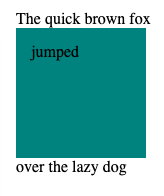
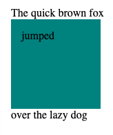

Introduction
Before display: inline-block the common way to arrange content on a page was by using the float attribute. This was especially handy for side navigation bars. If you’re not familiar with float, it removes content from the normal flow of the document, allowing other elements to flow around it. While this can be a great method for arranging content on a page, it’s not so good for aligning blocks vertically. Say, you want a grid of images but the elements are all different heights.
As you can see box 7 gets caught behind box 2 since they are different heights and float causes the elements to flow aroudnd each other.

What is display: inline?
When elements are inline it means they are side-by-side in the flow of the document. It is the default for inline elements, such as span. Elements do not move to fit around other elements and are displayed inline inside the current block, on the same line. In inline elements the inner element does not form a block and the element gets dimensions from their parent element. This means that top and bottom margins and paddings are not respected.
What is display: inline-block?
Inline-block is similar to inline with the sole difference that the margins and padding are respected. Also does not add a line break after the element, so elements will sit side by side. This moves other content ot fit around the blocks. An example of a real-use case would be if you wanted to give an inline element a width. Say, to display navigation links beside each other.
What is display: block?
As with display: inline-block everything is respected, but the elements are displayed stacked rather than side-by-side (unless otherwise specified e.g. with a float element) and is the default for block level elements such as div.
 
